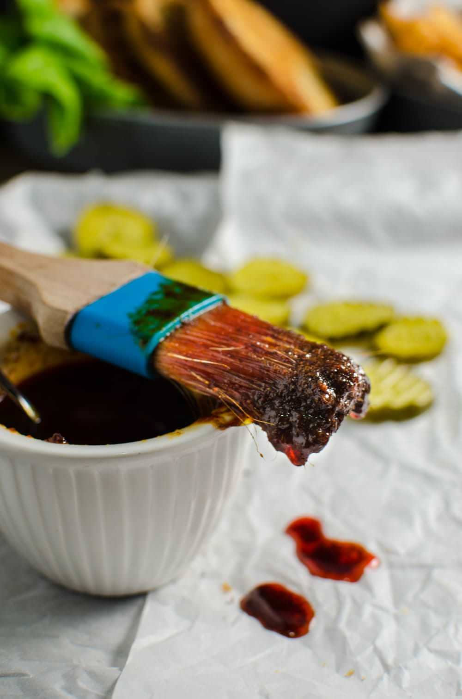

Fried chicken (and fried chicken sandwich) ranks very highly on the list of favorite comfort food for most people, without a doubt. And why not? When done right, it’s a glorious marriage of flavors and textures.
I started making my own fried chicken when I used to live in Lismore (in Australia), because the KFC there was just too bland to justify parting with my money over it. Plus, making it home meant that I could spice it up however I wanted (these taco spiced baked chicken tenders and spicy cumin popcorn chicken were two favorites of mine!), and do some experimenting along the way. One result of that would be this crunchy, crispy fried chicken marinated with all the flavors of bloody mary and scotch, that I shared recently.

A bbq brush dripped with nashville hot sauce.
Instructions
Halve the two chicken breast pieces and pound each piece until it's about 1 cm thick.
Sprinkle salt and pepper on both sides of each piece.
Mix the ingredients for the egg mix (for dredging). Set aside.
Take a piece of chicken and coat it with the flour mix. Then dip it in the egg mix to coat and once more in the flour mix to coat.
Set it on a wire rack (or on a plate that's sprinkled with flour).
Heat the oil to about 380°F in a deep, heavy bottomed saucepan.
Fry the chicken pieces (I only fry 2 pieces at a time to prevent overcrowding) for about 6 minutes, until the chicken turns golden brown and the internal temperature is at about 165°F.
Place the chicken on a wire rack (the chicken can also be kept in a warm oven to keep it warm).
While the chicken is frying, place all the ingredients for the hot sauce in a small saucepan and heat over medium heat to melt the butter and mix all the ingredients to form a paste.